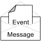

An event is any real world occurrence with business significance, for example a request for payment.
Event parameters are represented by Map<String,Object>
A message is a container for recording an event. Wrapping each event in a message gives a handle to identify it. Because the event parameters are persisted inside the message, you can re-attempt unprocessable events after an exception occurs.
If an exception happens, you can modify the service logic or the event data, then take action: